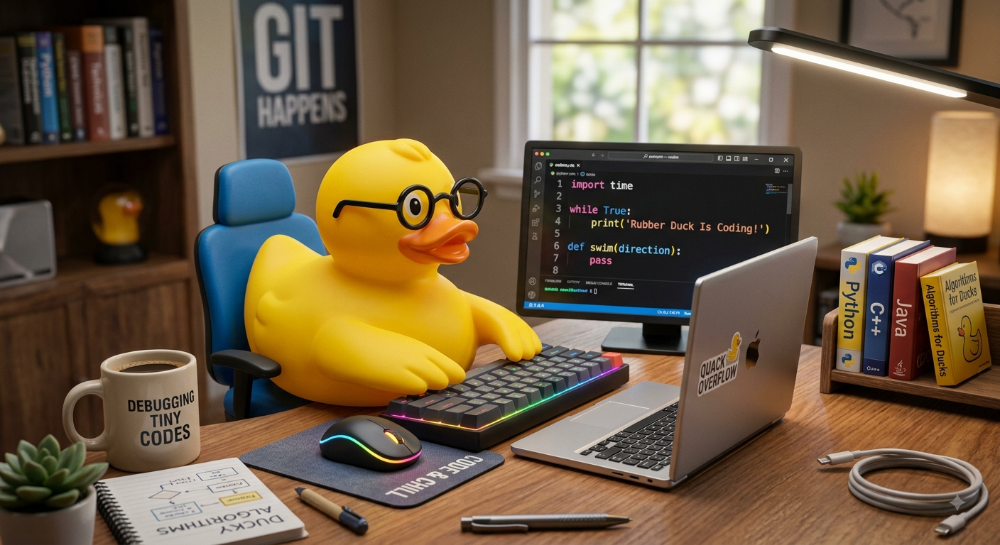

Perfil
Nombre: Eduardo Rubilar
Carrera: Ingeniería en Informática
Años de experiencia: 0
Presentación
Soy Eduardo Rubilar, un estudiante de Ingeniería Inforamática en DuocUc en el segundo año de carrera
con sólida base en desarrollo backend y gestión de bases de datos relacionales. Apasionado por la
optimización de código y la ciberseguridad. Motivado por aportar soluciones tecnológicas eficientes
en un equipo dinámico e innovador.
Aptitudes
- Resolución de problemas
- Pensamiento analítico
- Trabajo en equipo
- Adaptabilidad al cambio
- Gestión del tiempo
Aptitudes Tecnicas
- Lenguajes de código (Python, Java, C++, JavaScript)
- Bases de datos (SQL, NoSQL, PostgreSQL)
- Redes y servidores (Cloud computing, AWS, Docker, Linux)
- Ciberseguridad y control de fallosControl de versiones (Git, GitHub)
Formación académica
Eduación basica: Alicante del Rosal
Educación Media: Instituto Nacional
Educación Superior: DuocUc sede San Joaquín
Datos de Contacto
- Whatsapp: +569844545
- Email: e.rubilar@duocuc.cl